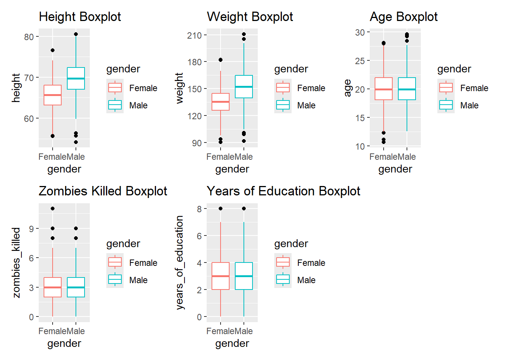
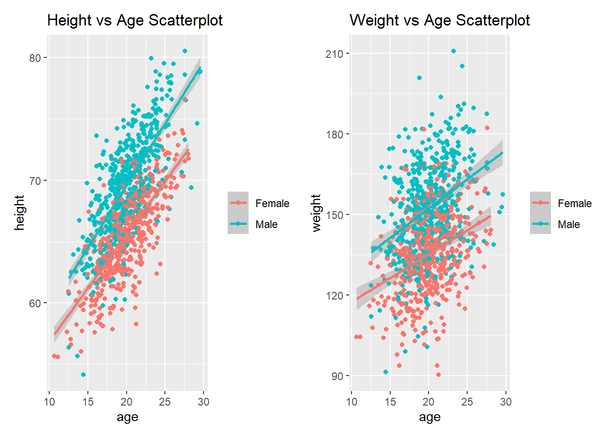
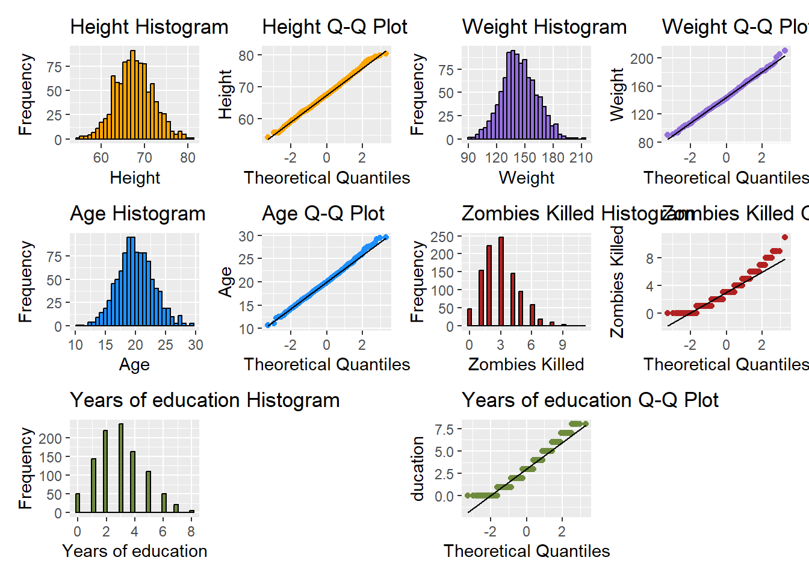
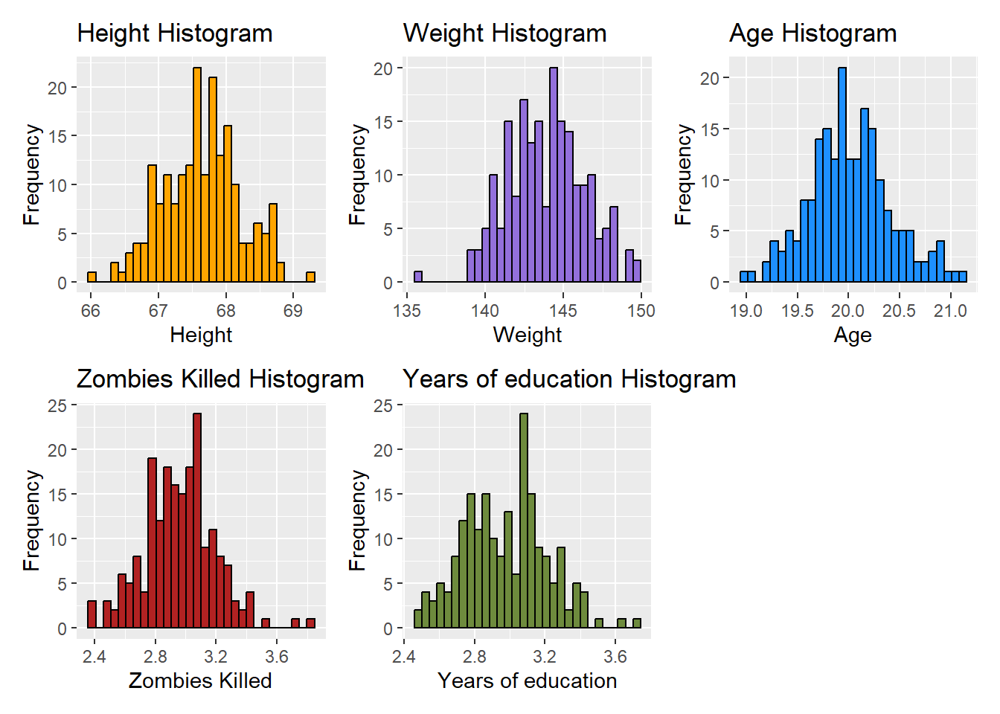

library(tidyverse)
library(radiant)
library(patchwork)
zf <- "https://raw.githubusercontent.com/difiore/ada-datasets/main/zombies.csv"
zd <- read_csv(zf, col_names = TRUE)Exercise-05-Quarto-Challenge-2
Exercise 05: Generate Sampling Distributions and CIs
Challenge 2
Step 1
Loading in the packages and the “zombies.csv” file that I will be using for Challenge 2. I loaded in my data as a tibble and named it zd instead of z.
Step 2
I calculated the population mean and the standard deviation (SD) for each of the following variables.
height
weight
age
number of zombies killed
years of education
I used the function sdpop() function from the {radiant} package to calculate the standard deviation (SD) for the population.
zd_population_results <- zd |>
summarize(height_populationM = mean(height, na.rm = TRUE),
height_populationSD = sdpop(height, na.rm = TRUE),
weight_populationM = mean(weight, na.rm = TRUE),
weight_populationSD = sdpop(weight, na.rm = TRUE),
age_populationM = mean(age, na.rm = TRUE),
age_populationSD = sdpop(age, na.rm = TRUE),
zombies_killed_populationM = mean(zombies_killed, na.rm = TRUE),
zombies_killed_populationSD = sdpop(zombies_killed, na.rm = TRUE),
years_of_education_populationM = mean(years_of_education, na.rm = TRUE),
years_of_education_populationSD = sdpop(years_of_education, na.rm = TRUE))
zd_population_results# A tibble: 1 × 10
height_populationM height_populationSD weight_populationM weight_populationSD
<dbl> <dbl> <dbl> <dbl>
1 67.6 4.31 144. 18.4
# ℹ 6 more variables: age_populationM <dbl>, age_populationSD <dbl>,
# zombies_killed_populationM <dbl>, zombies_killed_populationSD <dbl>,
# years_of_education_populationM <dbl>, years_of_education_populationSD <dbl>Step 3
I used {ggplot} to make boxplots for each of the variables above (e.g., “height”, “weight”,“age”, “zombies_killed”, and “years_of_education”) by “gender.” I made each boxplot individually and then used a package called {patchwork} to combine them all together. Is there away to make them all together just using ggplot?
zd_p_height <- zd |>
ggplot(aes(x = gender, y = height)) +
geom_boxplot(aes(colour = gender), outlier.color = "black", na.rm = TRUE) +
ggtitle("Height Boxplot")
zd_p_weight <- zd |>
ggplot(aes(x = gender, y = weight)) +
geom_boxplot(aes(colour = gender), outlier.color = "black", na.rm = TRUE) +
ggtitle("Weight Boxplot")
zd_p_age <- zd |>
ggplot(aes(x = gender, y = age)) +
geom_boxplot(aes(colour = gender), outlier.color = "black", na.rm = TRUE) +
ggtitle("Age Boxplot")
zd_p_zombies_killed <- zd |>
ggplot(aes(x = gender, y = zombies_killed)) +
geom_boxplot(aes(colour = gender), outlier.color = "black", na.rm = TRUE) +
ggtitle("Zombies Killed Boxplot")
zd_p_years_of_education <- zd |>
ggplot(aes(x = gender, y = years_of_education)) +
geom_boxplot(aes(colour = gender), outlier.color = "black", na.rm = TRUE) +
ggtitle("Years of Education Boxplot")
zd_boxpots <- wrap_plots(zd_p_height, #combines graphs together
zd_p_weight,
zd_p_age,
zd_p_zombies_killed,
zd_p_years_of_education)
zd_boxpots
Step 4
I used {ggplot} to make two scatter plots for the following:
“height” vs “age”
“weight” vs “age”
I kept “age” as my x variable and I made sure to split up the data points by “gender.” I used the package {patchwork} again to combine to two graphs.
When it comes to “height” vs “age” it looks like there is a positive correlation between the two variables in both males and female. The same could be said for “weight” vs “age” but to a lesser degree. So it seems like “height” and “weight” are related to to “age.”
zd_scatterplot_height <- zd |>
ggplot(aes(x = age, y = height, color = factor(gender)))+
geom_point(na.rm = TRUE) +
geom_smooth(method= lm) +
theme(legend.title=element_blank()) +
ggtitle("Height vs Age Scatterplot")
zd_scatterplot_weight <- zd |>
ggplot(aes(x = age, y = weight, color = factor(gender)))+
geom_point(na.rm = TRUE) +
geom_smooth(method= lm) +
theme(legend.title=element_blank()) +
ggtitle("Weight vs Age Scatterplot")
zd_scatterplots <- wrap_plots(zd_scatterplot_height, zd_scatterplot_weight)
zd_scatterplots
Step 5
I created histograms and Q-Q plots for each of the quantitative variables (e.g., “height”, “weight”, “age”, “zombies_killed”, and “years_of_education”). I used the package {patchwork} again to combine to all the graphs together. I do have a question about binning in histograms????
The variables that seem to drawn from a normal distribution are “height”, “weight”, and “age.” The other two variables “zombies_killed” and “years_of_education” seem to be drawn from a poisson distribution that is slightly skewed to the right.
#HEIGHT
zd_histogram_height <- zd |>
ggplot(aes(x = height)) +
geom_histogram(color="black", fill="orange") +
labs(x = "Height", y = "Frequency") +
ggtitle("Height Histogram")
zd_QQplot_height <- zd |>
ggplot(aes(sample = height)) +
stat_qq(color="orange") +
stat_qq_line(color="black") +
labs(x = "Theoretical Quantiles", y = "Height") +
ggtitle("Height Q-Q Plot")
#WEIGHT
zd_histogram_weight <- zd |>
ggplot(aes(x = weight)) +
geom_histogram(color="black", fill="mediumpurple") +
labs(x = "Weight", y = "Frequency") +
ggtitle("Weight Histogram")
zd_QQplot_weight <- zd |>
ggplot(aes(sample = weight)) +
stat_qq(color="mediumpurple") +
stat_qq_line(color="black") +
labs(x = "Theoretical Quantiles", y = "Weight") +
ggtitle("Weight Q-Q Plot")
#AGE
zd_histogram_age <- zd |>
ggplot(aes(x = age)) +
geom_histogram(color="black", fill="dodgerblue") +
labs(x = "Age", y = "Frequency") +
ggtitle("Age Histogram")
zd_QQplot_age <- zd |>
ggplot(aes(sample = age)) +
stat_qq(color="dodgerblue") +
stat_qq_line(color="black") +
labs(x = "Theoretical Quantiles", y = "Age") +
ggtitle("Age Q-Q Plot")
#ZOMBIES KILLED
zd_histogram_zombies_killed <- zd |>
ggplot(aes(x = zombies_killed)) +
geom_histogram(color="black", fill="firebrick") +
labs(x = "Zombies Killed", y = "Frequency") +
ggtitle("Zombies Killed Histogram")
zd_QQplot_zombies_killed <- zd |>
ggplot(aes(sample = zombies_killed)) +
stat_qq(color="firebrick") +
stat_qq_line(color="black") +
labs(x = "Theoretical Quantiles", y = "Zombies Killed") +
ggtitle("Zombies Killed Q-Q Plot")
#YEARS OF EDUCATION
zd_histogram_years_of_education <- zd |>
ggplot(aes(x = years_of_education)) +
geom_histogram(color="black", fill="darkolivegreen4") +
labs(x = "Years of education", y = "Frequency") +
ggtitle("Years of education Histogram")
zd_QQplot_years_of_education <- zd |>
ggplot(aes(sample = years_of_education)) +
stat_qq(color="darkolivegreen4") +
stat_qq_line(color="black") +
labs(x = "Theoretical Quantiles", y = "ducation") +
ggtitle("Years of education Q-Q Plot")
zd_histogram_QQplot<- wrap_plots(zd_histogram_height, zd_QQplot_height,
zd_histogram_weight, zd_QQplot_weight,
zd_histogram_age, zd_QQplot_age,
zd_histogram_zombies_killed,
zd_QQplot_zombies_killed,
zd_histogram_years_of_education, plot_spacer(),
zd_QQplot_years_of_education)
zd_histogram_QQplot
Step 6
I first created a sample of using slice_sample() function (n=50). I next calculated the sample mean, standard deviation (SD), and standard error (SE) for each of the variables (e.g., “height”, “weight”, “age”, “zombies_killed”, and “years_of_education”).
I next calculated the a theoretical 95% confidence interval for each variable mean using normal distribution. I chose the normal distribution because our n is larger than 30.
Sampling
zd_sample <- zd |>
slice_sample(n = 50, replace = FALSE)
zd_sample# A tibble: 50 × 10
id first_name last_name gender height weight zombies_killed
<dbl> <chr> <chr> <chr> <dbl> <dbl> <dbl>
1 117 Kathleen Harris Female 65.7 142. 2
2 697 Carol Perez Female 69.8 158. 1
3 892 Clarence Moore Male 63.0 131. 1
4 91 Justin Murphy Male 65.9 145. 5
5 857 Evelyn Gutierrez Female 66.9 141. 1
6 378 Jean Johnson Female 67.7 137. 5
7 978 Willie Richards Male 64.7 133. 5
8 684 Christina Harrison Female 66.8 128. 3
9 870 Thomas Fox Male 78.6 205. 6
10 929 Raymond Ferguson Male 64.2 119. 6
# ℹ 40 more rows
# ℹ 3 more variables: years_of_education <dbl>, major <chr>, age <dbl>Sample mean, standard deviation (SD), and standard error (SE)
zd_sampleMSDSE <- zd_sample |>
summarize(height_sampleM = mean(height, na.rm = TRUE),
height_sampleSD = sd(height, na.rm = TRUE),
height_sampleSE = sd(height, na.rm = TRUE) / sqrt(length(height)),
weight_sampleM = mean(weight, na.rm = TRUE),
weight_sampleSD = sd(weight, na.rm = TRUE),
weight_sampleSE = sd(weight, na.rm = TRUE) / sqrt(length(weight)),
age_sampleM = mean(age, na.rm = TRUE),
age_sampleSD = sd(age, na.rm = TRUE),
age_sampleSE = sd(age, na.rm = TRUE) / sqrt(length(age)),
zombies_killed_sampleM = mean(zombies_killed, na.rm = TRUE),
zombies_killed_sampleSD = sd(zombies_killed, na.rm = TRUE),
zombies_killed_sampleSE = sd(zombies_killed, na.rm = TRUE) / sqrt(length(zombies_killed)),
years_of_education_sampleM = mean(years_of_education, na.rm = TRUE),
years_of_education_sampleSD = sd(years_of_education, na.rm = TRUE),
years_of_education_sampleSE = sd(years_of_education, na.rm = TRUE) / sqrt(length( years_of_education)))
zd_sampleMSDSE# A tibble: 1 × 15
height_sampleM height_sampleSD height_sampleSE weight_sampleM weight_sampleSD
<dbl> <dbl> <dbl> <dbl> <dbl>
1 67.6 4.44 0.628 142. 20.1
# ℹ 10 more variables: weight_sampleSE <dbl>, age_sampleM <dbl>,
# age_sampleSD <dbl>, age_sampleSE <dbl>, zombies_killed_sampleM <dbl>,
# zombies_killed_sampleSD <dbl>, zombies_killed_sampleSE <dbl>,
# years_of_education_sampleM <dbl>, years_of_education_sampleSD <dbl>,
# years_of_education_sampleSE <dbl>95% confidence interval for each variable. I added a new column in the beginning to show which row is the lower and upper CI.
#created fucntion for calculating CI
CI <- function (x) {
mean(x) + qnorm(p=c(0.025, 0.975)) * sqrt(var(x)/length(x))
}
zd_sampleCI <- zd_sample |>
reframe(height_sampleCI = CI(height),
weight_sampleCI = CI(weight),
age_sampleCI = CI(age),
zombies_killed_sampleCI = CI(zombies_killed),
years_of_education_sampleCI = CI(years_of_education))
zd_sampleCI <- mutate(zd_sampleCI, CI = c("lower", "upper"),.before = everything())
zd_sampleCI# A tibble: 2 × 6
CI height_sampleCI weight_sampleCI age_sampleCI zombies_killed_sampleCI
<chr> <dbl> <dbl> <dbl> <dbl>
1 lower 66.4 136. 19.5 2.74
2 upper 68.8 147. 21.0 3.70
# ℹ 1 more variable: years_of_education_sampleCI <dbl>Step 7
Using the slice_sample() function drew another 199 random samples of 50 individuals without replacement to create sampling distribution. Then for each sample I calculated the sample mean and standard deviation (SD) for each of the variables (e.g., “height”, “weight”, “age”, “zombies_killed”, and “years_of_education”). I went ahead and combined the that first sample (n=50)to the 199 samples I just sampled.
zd_random_sample <- 199
zd_sample_size <- 50
zd_s <- list()
for (i in 1:zd_random_sample) {
zd_s[[i]] <- zd |>
slice_sample(n = zd_sample_size, replace = FALSE) |>
summarize(height_sampleM = mean(height, na.rm = TRUE),
height_sampleSD = sd(height, na.rm = TRUE),
height_sampleSE = sd(height, na.rm = TRUE) / sqrt(length(height)),
weight_sampleM = mean(weight, na.rm = TRUE),
weight_sampleSD = sd(weight, na.rm = TRUE),
weight_sampleSE = sd(weight, na.rm = TRUE) / sqrt(length(weight)),
age_sampleM = mean(age, na.rm = TRUE),
age_sampleSD = sd(age, na.rm = TRUE),
age_sampleSE = sd(age, na.rm = TRUE) / sqrt(length(age)),
zombies_killed_sampleM = mean(zombies_killed, na.rm = TRUE),
zombies_killed_sampleSD = sd(zombies_killed, na.rm = TRUE),
zombies_killed_sampleSE = sd(zombies_killed, na.rm = TRUE) / sqrt(length(zombies_killed)),
years_of_education_sampleM = mean(years_of_education, na.rm = TRUE),
years_of_education_sampleSD = sd(years_of_education, na.rm = TRUE),
years_of_education_sampleSE = sd(years_of_education, na.rm = TRUE) / sqrt(length( years_of_education)))
}
#combined everything into one datatable
zd_combined_sample_distribution_199 <- bind_rows(zd_s)
#combined that first sample I took to the 199 I just sampled
zd_combined_sample_distribution_200 <- bind_rows(zd_s, zd_sampleMSDSE)
zd_combined_sample_distribution_200# A tibble: 200 × 15
height_sampleM height_sampleSD height_sampleSE weight_sampleM weight_sampleSD
<dbl> <dbl> <dbl> <dbl> <dbl>
1 67.1 3.95 0.559 142. 16.5
2 67.9 4.64 0.656 143. 16.6
3 68.1 4.17 0.590 147. 17.3
4 67.1 3.92 0.554 140. 18.4
5 67.3 3.68 0.520 143. 15.0
6 67.1 4.33 0.612 142. 19.0
7 67.7 4.47 0.633 144. 19.4
8 67.1 4.23 0.599 141. 18.6
9 67.6 4.10 0.580 147. 16.8
10 68.1 4.63 0.655 148. 19.3
# ℹ 190 more rows
# ℹ 10 more variables: weight_sampleSE <dbl>, age_sampleM <dbl>,
# age_sampleSD <dbl>, age_sampleSE <dbl>, zombies_killed_sampleM <dbl>,
# zombies_killed_sampleSD <dbl>, zombies_killed_sampleSE <dbl>,
# years_of_education_sampleM <dbl>, years_of_education_sampleSD <dbl>,
# years_of_education_sampleSE <dbl>I next calculated the standard deviation (SD) for the sampling distribution and also added here the calculated standard error (SE) for just the first sample (n=50).
The standard deviation (SD) of the sampling distribution (estimation of the population standard error (SE) to the standard error (SE) for just the first sample were pretty much the same but here are the comparisons for each variable:
“height” - The sample distribution SD (0.62) and sample SEM (0.62) are the same.
“weight” - The sampledistribution SD (2.53) is slightly smaller than the sample SEM (2.69).
“age” - The sample distribution SD (0.42) is slightly larger than the sample SEM (0.39)
“zombies_killed” - The sample distribution SD (0.24) and the sample SEM (0.23) are pretty much the same.
“years_of_education” - The sample distribution SD (0.22) is slightly smaller than the sample SEM (0.25).\
I realized these might not be the same number when you run this. I could not the set.seed() function to work.
zd_sample_distributionSD <- zd_combined_sample_distribution_200 |>
summarize(height_distributionSD = sd(height_sampleM, na.rm = TRUE),
weight_sample_distributionSD = sd(weight_sampleM, na.rm = TRUE),
age_sample_distributionSD = sd(age_sampleM, na.rm = TRUE),
zombies_killed_sample_distributionSD = sd(zombies_killed_sampleM, na.rm = TRUE),
years_of_education_sample_distributionSD = sd(years_of_education_sampleM, na.rm = TRUE))
zd_sample_distributionSD# A tibble: 1 × 5
height_distributionSD weight_sample_distributionSD age_sample_distributionSD
<dbl> <dbl> <dbl>
1 0.569 2.45 0.402
# ℹ 2 more variables: zombies_killed_sample_distributionSD <dbl>,
# years_of_education_sample_distributionSD <dbl>zd_sampleSE <- zd_sample |>
summarize(height_sampleSE = sd(height, na.rm = TRUE) / sqrt(length(height)),
weight_sampleSE = sd(weight, na.rm = TRUE) / sqrt(length(weight)),
age_sampleSE = sd(age, na.rm = TRUE) / sqrt(length(age)),
zombies_killed_sampleSE = sd(zombies_killed, na.rm = TRUE) / sqrt(length(zombies_killed)),
years_of_education_sampleSE = sd(years_of_education, na.rm = TRUE) / sqrt(length( years_of_education)))
zd_sampleSE# A tibble: 1 × 5
height_sampleSE weight_sampleSE age_sampleSE zombies_killed_sampleSE
<dbl> <dbl> <dbl> <dbl>
1 0.628 2.84 0.395 0.246
# ℹ 1 more variable: years_of_education_sampleSE <dbl>Step 8
I plotted the sample distributions for each of the variables (e.g., “height”, “weight”, “age”, “zombies_killed”, and “years_of_education”). I used the package {patchwork} again to combine to all the graphs together. The sample distribution histograms for each variable look as if they are normally distributed, even the two variables “zombies_killed” and “years_of_education” which had originally looked like if they were being drawn from a poisson distribution.
#HEIGHT
zd_sample_distribution_histogram_height <- zd_combined_sample_distribution_200 |>
ggplot(aes(x = height_sampleM)) +
geom_histogram(color="black", fill="orange") +
labs(x = "Height", y = "Frequency") +
ggtitle("Height Histogram")
#WEIGHT
zd_sample_distribution_histogram_weight <- zd_combined_sample_distribution_200 |>
ggplot(aes(x = weight_sampleM)) +
geom_histogram(color="black", fill="mediumpurple") +
labs(x = "Weight", y = "Frequency") +
ggtitle("Weight Histogram")
#AGE
zd_sample_distribution_histogram_age <- zd_combined_sample_distribution_200 |>
ggplot(aes(x = age_sampleM)) +
geom_histogram(color="black", fill="dodgerblue") +
labs(x = "Age", y = "Frequency") +
ggtitle("Age Histogram")
#ZOMBIES KILLED
zd_sample_distribution_histogram_zombies_killed <- zd_combined_sample_distribution_200 |>
ggplot(aes(x = zombies_killed_sampleM)) +
geom_histogram(color="black", fill="firebrick") +
labs(x = "Zombies Killed", y = "Frequency") +
ggtitle("Zombies Killed Histogram")
#YEARS OF EDUCATION
zd_sample_distribution_histogram_years_of_education <- zd_combined_sample_distribution_200 |>
ggplot(aes(x = years_of_education_sampleM)) +
geom_histogram(color="black", fill="darkolivegreen4") +
labs(x = "Years of education", y = "Frequency") +
ggtitle("Years of education Histogram")
zd_sample_distribution_histogram<- wrap_plots(zd_sample_distribution_histogram_height,
zd_sample_distribution_histogram_weight,
zd_sample_distribution_histogram_age, zd_sample_distribution_histogram_zombies_killed,
zd_sample_distribution_histogram_years_of_education)
zd_sample_distribution_histogram
Step 9
I calculated the 95% confidence interval for each variable using sampling distribution. Before I could do this I first created a new CI9() function (CI9 for step 9) for calculating the CI using your own sampling distribution. I added a new column in the beginning to show which row is the lower and upper CI.
I also brought back the original first sample CI to compare the two. Similar to step 8 (sample SE vs sample distribution SD) the CIs are very similar between the first sample and the sample distribution.
CI9 <- function (x) {
quantile(x, probs = c(0.025, 0.975))
}
zd_sample_distributionCI <- zd_combined_sample_distribution_200 |>
reframe(height_sample_distributionCI = CI9(height_sampleM),
weight_sample_distributionCI = CI9(weight_sampleM),
age_sample_distributionCI = CI9(age_sampleM),
zombies_killed_sample_distributionCI = CI9(zombies_killed_sampleM),
years_of_education_sample_distributionCI = CI9(years_of_education_sampleM))
zd_sample_distributionCI <- mutate(zd_sample_distributionCI, CI = c("lower", "upper"),.before = everything()) #adding column for "lower", "upper"
zd_sample_distributionCI# A tibble: 2 × 6
CI height_sample_distributi…¹ weight_sample_distri…² age_sample_distribut…³
<chr> <dbl> <dbl> <dbl>
1 lower 66.5 139. 19.3
2 upper 68.7 148. 20.9
# ℹ abbreviated names: ¹height_sample_distributionCI,
# ²weight_sample_distributionCI, ³age_sample_distributionCI
# ℹ 2 more variables: zombies_killed_sample_distributionCI <dbl>,
# years_of_education_sample_distributionCI <dbl>zd_sampleCI #original fisrt sample # A tibble: 2 × 6
CI height_sampleCI weight_sampleCI age_sampleCI zombies_killed_sampleCI
<chr> <dbl> <dbl> <dbl> <dbl>
1 lower 66.4 136. 19.5 2.74
2 upper 68.8 147. 21.0 3.70
# ℹ 1 more variable: years_of_education_sampleCI <dbl>Step 10
I calculated the 95% confidence interval for each variable from the original first sample (n=50) I took using bootstrapping. I first created a function called boot_CI() that held my parameters needed and the code for creating my bootstrapping loop. I added a new column in the beginning to show which row is the lower and upper CI. The CIs generated through bootstrapping are very similar to the CIs that were calculated in step 9.
boot_CI <- function(x) {
n_boot <- 10000 #number of boots (loops)
boot <- vector()
n <- 1000 #sample size
for (i in 1:n_boot) { #for() loop for bootstrap
boot[[i]] <- mean(sample(x, n, replace = TRUE))
}
#setting the lower and upper CI bounds to 2.5% and 97.5%
CIboot <- quantile(boot, probs = c(0.025, 0.975))
}
zd_boot_CI <- zd_sample |>
reframe(height_boot_CI = boot_CI(height),
weight_boot_CI = boot_CI(weight),
age_boot_CI = boot_CI(age),
zombies_boot_CI = boot_CI(zombies_killed),
years_boot_CI = boot_CI(years_of_education))
zd_boot_CI <- mutate(zd_boot_CI, CI = c("lower", "upper"),.before = everything())
zd_boot_CI# A tibble: 2 × 6
CI height_boot_CI weight_boot_CI age_boot_CI zombies_boot_CI years_boot_CI
<chr> <dbl> <dbl> <dbl> <dbl> <dbl>
1 lower 67.3 140. 20.1 3.12 2.96
2 upper 67.9 143. 20.4 3.33 3.16